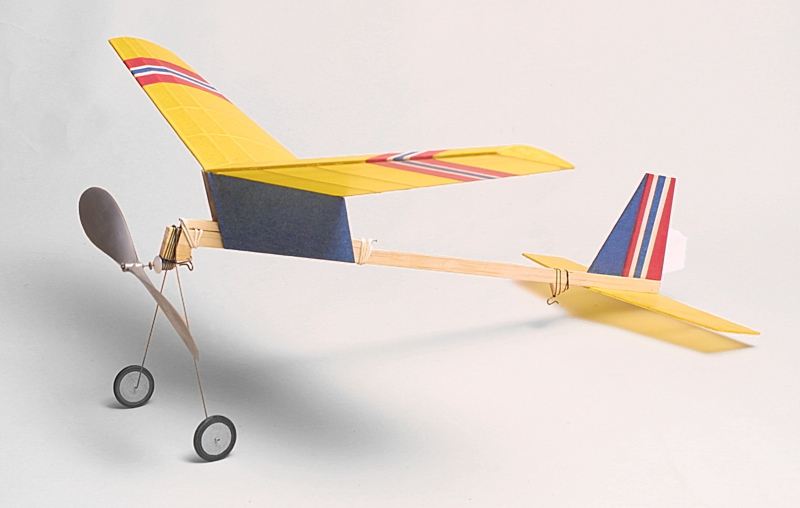
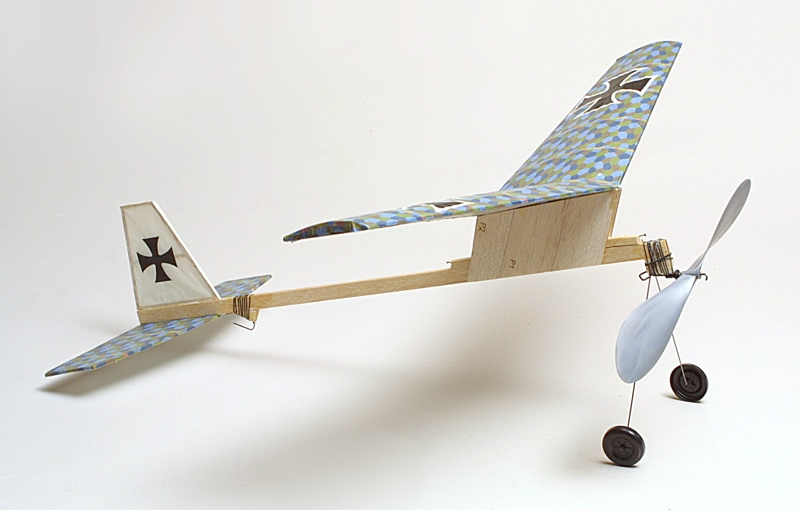
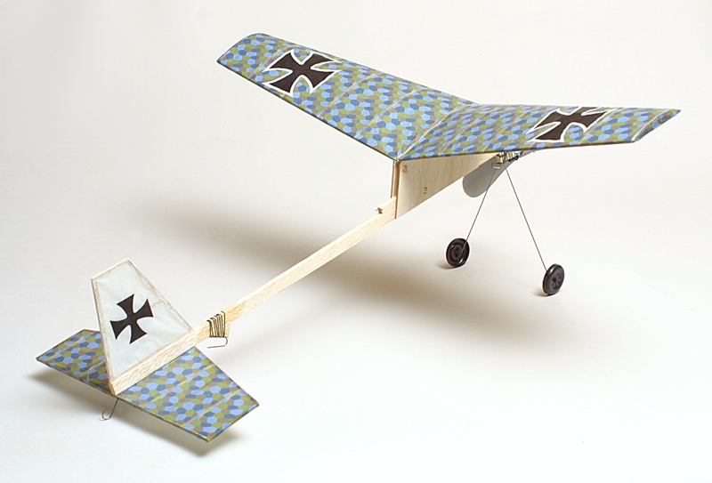
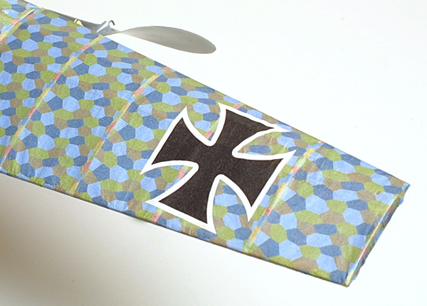
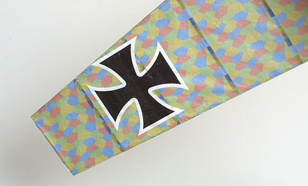
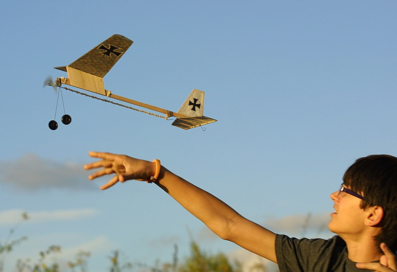
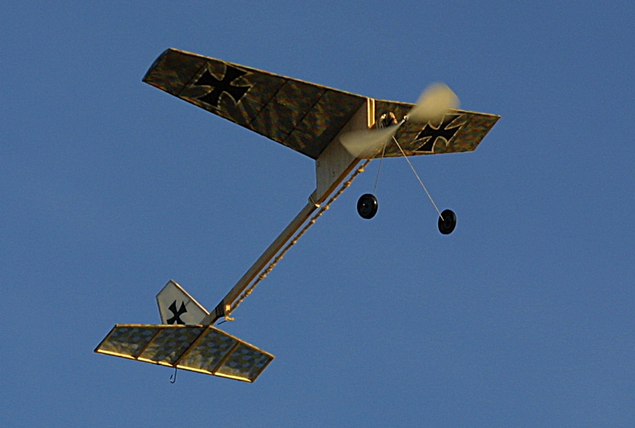
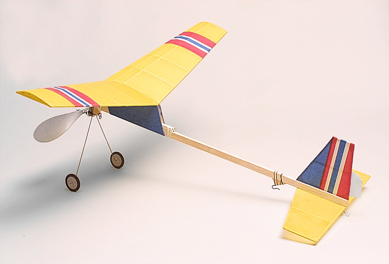

|
The Sky Bunny is a Bill Warner design, intended as a second or third step for budding modelers. It has long been available as a kit from Peck-Polymers and remains popular with beginners and more experienced modelers alike. Its basic construction and proven flight characteristics make this model a quick build and relaxing sport flyer for all.
Inspired by the Second International Sky Bunny Postal Contest held over Labor Day Weekend, Gryffin and I decided to build a couple of models to enter. Like the Prairie Birds we built over the summer, he worked with a laser cut kit from Peck-Polymers while I built mine from plans. | |
|
 My Sky Bunny is finished in Esaki tissue pieced together using a glue stick to represent a Norwegian scheme.





 | |
|---|---|
|
If you would like to try your hand at building and flying a Sky Bunny, you can pick up a kit, along with a few needed accessories, directly from Peck-Polymers.
Information and results concerning the Second Annual Sky Bunny Postal Competition are available here. | |
|  The Sky Bunny is a great flyer and perfect introduction for building and covering basic models. | |
|
Dave Gee's Sky Bunny Build video. | |
|
Specs Weight: | 18 grams | Wing Span: | 17.25 inches | Length: | 16.5 inches | Prop: | Peck Polymers 7.75-inch dia. | Motor: | 18-inch loop of 3/16 FAI Tan II | |
Return to
Copyright 2015, Thayer Syme. All rights reserved